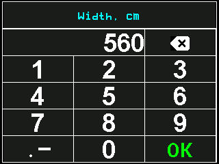

Le pavé numérique
Comment saisir un nombre sur le Hectare Mini — ce que montre la fenêtre, quels boutons fonctionnent, et les pièges du champ vide et des valeurs hors plage.
Certaines valeurs peuvent être saisies en entier au lieu d'être modifiées pas à pas avec « PLUS » et « MINUS ». Dans un menu, une telle valeur est placée entre -[ et ]+ ; appuyez sur « MENU » et le pavé numérique s'ouvre. Le pavé s'ouvre aussi de lui-même là où les pas n'ont pas de sens — pour le poids à la fin d'un étalonnage de moteur, pour le nombre de trous du disque d'un moteur de doseur et pour un code d'accès.

Ce que montre le pavé

- Nom du paramètre, en bleu clair. Dans certaines fenêtres, toute la consigne, sur plusieurs lignes.
- Le nombre. Il s'ouvre avec la valeur actuelle (vide si la valeur est 0) et s'allonge vers la gauche à mesure que vous tapez.
- Retour arrière. Un toucher efface le dernier caractère ; un toucher maintenu efface tout le nombre.
- Chiffres. Touchez-les — les chiffres se saisissent uniquement sur l'écran.
- Touche .−. Place la virgule décimale. Un toucher maintenu commute le signe moins, là où la valeur peut être négative.
- « OK », en vert. Valide le nombre et ferme le pavé.
Une touche touchée ne s'allume pas. Vous voyez que le toucher est arrivé grâce au nombre, et vous l'entendez si le son des boutons est activé.
Saisir un nombre
Sur un élément de menu dont la valeur est placée entre -[ et ]+, appuyez sur « MENU ». Le pavé s'ouvre.
Touchez et maintenez le retour arrière. L'ancienne valeur est effacée.
Touchez les chiffres. Chacun s'ajoute au nombre à droite.
Si la valeur a des dixièmes, touchez .− et saisissez les décimales.
Vérifiez le nombre, puis touchez « OK » ou appuyez sur « MENU ». Le pavé se ferme et le menu affiche la nouvelle valeur.
« BACK » quitte le pavé sans rien modifier. Les autres boutons et un toucher en dehors des touches ne font rien.
Règles du pavé
- La virgule ne fonctionne que là où la valeur a des dixièmes, par exemple « Minimum, rpm » (minimum, tr/min) et « Maximum, rpm » (maximum, tr/min) d'un moteur de doseur. Pour les nombres entiers, la touche .− ne fait rien.
- Une seule virgule par nombre. Un second toucher de .− ne fait rien tant que vous n'avez pas effacé la première virgule.
- Le nombre de décimales est limité à ce que la valeur admet. Si vous en saisissez moins, le panneau ajoute des zéros : avec une décimale, 12 devient 12.0.
- La longueur est limitée par la largeur du champ. Lorsqu'il est plein, les chiffres suivants ne font rien.
Votre machine fait quelque chose que cette page n'explique pas ? Écrivez à support@agriwelt.com — un ingénieur vous répond.